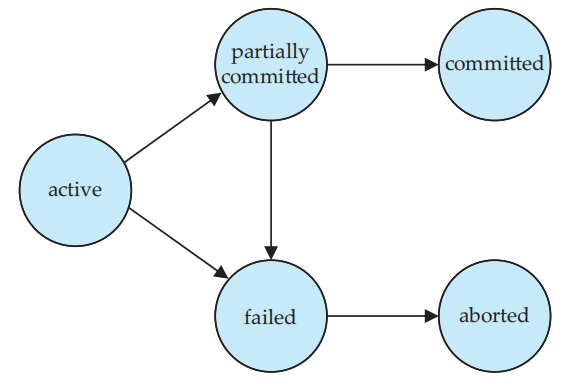
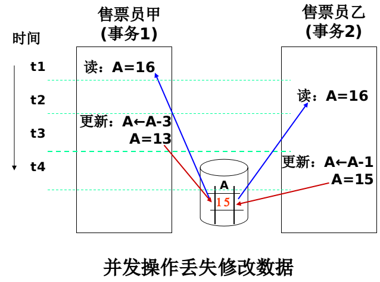
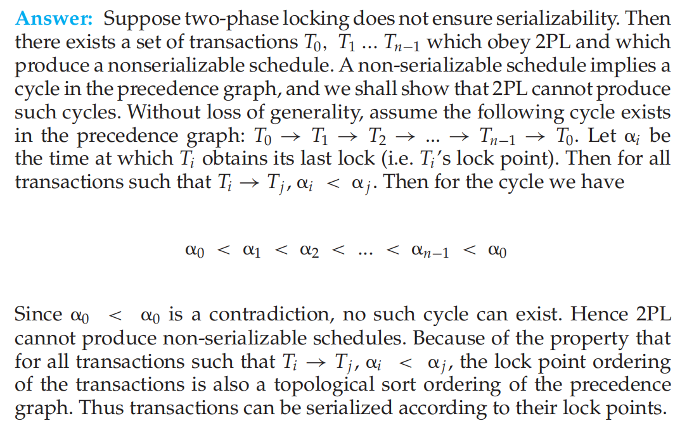
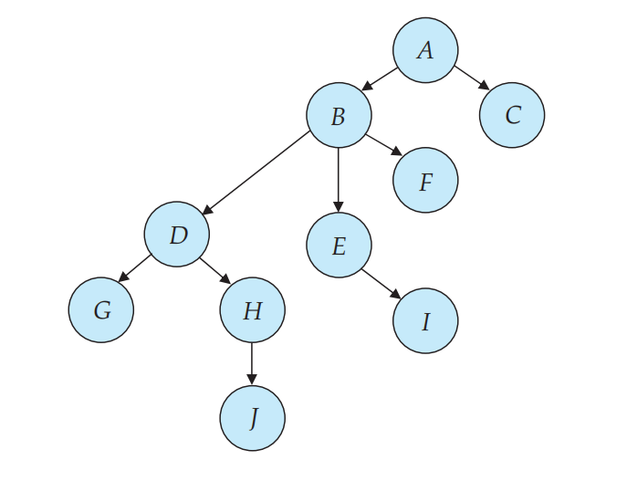
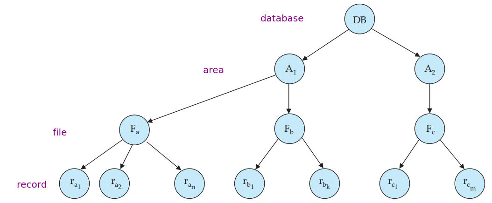
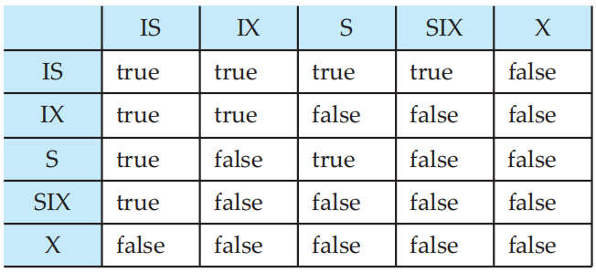
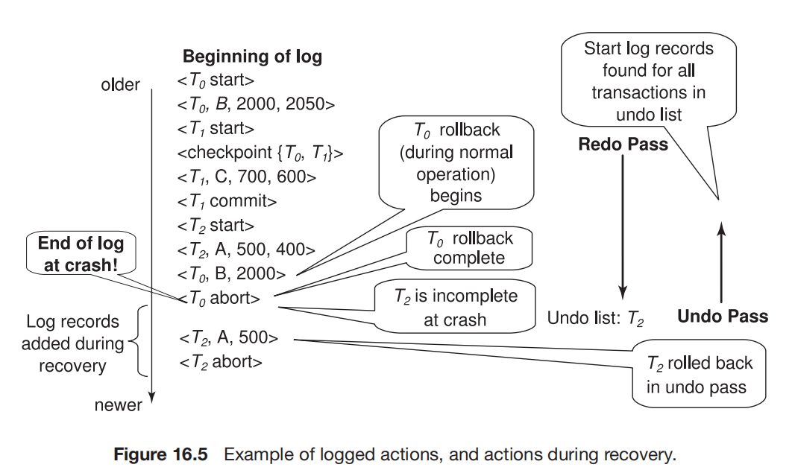
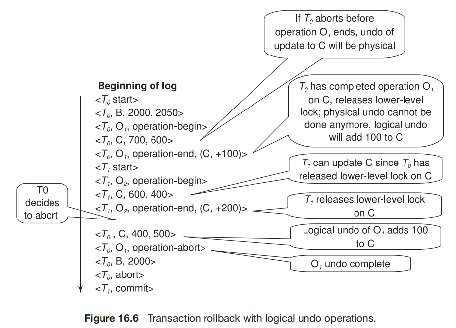
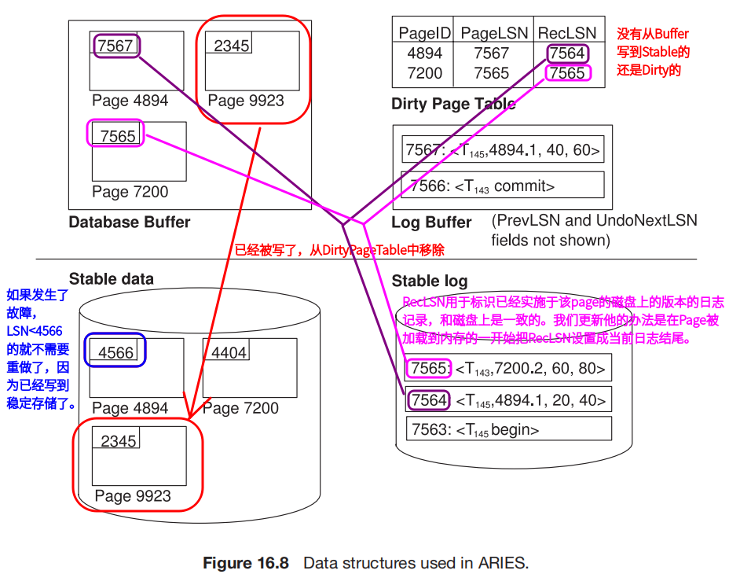

Database-事务
DBMS比起文件系统，有下面的优势。这些优势的实现离不开事务(Transaction)。或者说这些就是事务的特点：
并发：Concurrent executions of multiple users or multi-programs. 可恢复：Failures of various kinds, such as hardware failures and system crashes.
事务
事务的特性：
-
Atomicity (原子性). Either all operations of the transaction are properly reflected in the database or none are. (responsibility of transaction-management component, also recovery-management component)
也就是说，事务要么被执行要么不被执行。无论事务本身是否发生错误，或者计算机发生错误。
-
Isolation (隔离性). Although multiple transactions may execute concurrently, each transaction must be unaware of other concurrently executing transactions. Intermediate transaction results must be hidden from other concurrently executed transactions. (responsibility of concurrency-control component)
尽管事务是并发执行的，但是对任何一个事务来说他都是独立执行的，对他来说其他事务要么在他之前执行，要么在他之后执行。在后面的并发控制系统会介绍。
-
Consistency (一致性). Execution of a transaction in isolation preserves the consistency of the database. (the duty of application programmer)
-
Durability (持久性). After a transaction completes successfully, the changes it has made to the database persist, even if there are system failures. (responsibility of recovery-management component)
即使操作系统崩溃了甚至硬盘坏了（我们有一个理想的stable storage是永远有效的存储设备，比如RAID磁盘阵列，我们认为他是不会坏的），事务造成的影响也应该是持久的。在后面的恢复系统会介绍。
事务的原子性和持久性
- Active, the initial state; the transaction stays in this state while it is executing.
- Partially committed, after the final statement has been executed.
- Failed, after the discovery that normal execution can no longer proceed.
- Aborted, after the transaction has been rolled back and the database has been restored to its state prior to the start of the transaction.
- Committed, after successful completion.

事务的隔离性
如果事务串行serially发生我们就不用考虑隔离性。但是为了性能考虑事务往往是并发concurrency的。
我们通过调度让并发在某种程度上等价于一个串行调度，叫做可串行化。
当I和J是不同事务在相同数据项上做至少有一个write操作时，我们认为I和J是冲突conflict的。
冲突等价：如果调度S可以通过一系列非冲突指令交换转换成S‘，那么我们称S和S'是冲突等价的。所以若调度S和一个串行调度冲突等价，我们称S是冲突可串行化的。串行调度不是唯一的。
我们通过优先图precedence graph来检测调度是否冲突可串行化。
This graph consists of a pair G = (V, E), where V is a set of vertices and E is a set of edges. The set of vertices consists of all the transactions participating in the schedule. The set of edges consists of all edges Ti → Tj for which one of three conditions holds:
- Ti executes write(Q) before Tj executes read(Q). （也就是说，Ti应该先写了，Tj再读，Ti应该在Tj之前执行）
- Ti executes read(Q) before Tj executes write(Q). （也就是说，Ti应该先读了，Tj再写，Ti应该在Tj之前执行）
- Ti executes write(Q) before Tj executes write(Q). （也就是说，最后留下的应该是Tj写的结果，Ti应该在Tj之前执行）
然后如果我们得到的图有环，那么就有不可串行化，反之可以
Ti->Tj说明Ti应该在Tj之前执行。判断环和求顺序，都可以用拓扑排序。
还有视图可串行化和视图等价的概念。
- Recoverable schedule：对Ti和Tj，如果Tj读取了Ti之前写过的数据，那么Tj应该在Ti commit之后再commit。因为Ti中间可能遇到故障roll back。
- Cascaddeless schedule：一个更强的可恢复调度。简单的Recoverable schedule可能会像多米诺骨牌一样回滚。对Ti和Tj，如果Tj需要读取Ti写的数据，那么Tj应该在Ti commit之后再读取。
Recover
并发系统
并发导致竞争，产生问题。

上面介绍了如何判断事务是否可串行化，但是我们不可能枚举每一种情况然后再去判断。我们有以下这些并发控制的方法。
锁：
- exclusive (X, 排它锁) mode. Data item can be both read as well as written. X-lock is requested using lock-X instruction .
- shared (S, 共享锁) mode. Data item can only be read. S-lock is requested using lock-S instruction
只要一个事务还在访问数据项，他就必须拥有该数据项上的锁。
Two-Phase Locking Protocol
每个事务分两个阶段提出加锁和解锁申请
- 增长阶段(growing phase)：事务可以获得锁，但不能释放锁。
- 缩减阶段(shrinking phase)：事务可以释放锁，但不能获得锁。
我们称最后加锁的位置（增长阶段的结束）为Lock point。多个事务根据他们的Lock point进行排序，得到的顺序就是事务的一个可串行化顺序。它可以保证得到的调度是冲突可串的，但是不保证不会产生死锁，需要通过别的方法保证死锁不出现。

Strict Two-Phase Locking Protocol: 要求事务的排他锁在事务提交之后才可以释放。这样可以放置出现级联回滚。降低并发性。
Rigorous Two-Phase Locking Protocol: 要求事务在提交之前不可以释放任何锁。降低并发性。
一个简单的机制：
- Ti进行
read(Q)操作的时候，产生一个lock-S(Q); read(Q)指令。 - Ti进行
write(Q)操作的时候，检测Q上是否已经有Share lock，如果有upgrate(Q); write(Q)。如果没有，产生一个lock-X(Q); write(Q)操作。 - 事务提交或者终止之后，释放所有的锁。
Graph based protocol
To acquire such prior knowledge, we impose a partial ordering → on the set D = {d1, d2,..., dh} of all data items. If di → dj , then any transaction accessing both di and dj must access di before accessing dj . Only lock-X
- Ti的首次加锁可以对任何数据项进行
- 此后，Ti对Q加锁的前提是Ti持有Q的父项上的锁
- 对数据项的解锁可以随时进行
- 数据项被Ti加锁并解锁之后，Ti不能对该数据项加锁
与两阶段封锁协议相比，他不会产生死锁。

多粒度和意向锁
有时候我们可能需要封锁整个数据表或者数据库，这时候如果我们一个一个数据加锁代价是不能接受的。所以我们出现了允许系统定义Multiple Granularity的锁的机制。我们的锁可以形成一个树形结构：

这样我们如果要封锁整个数据库，就可以直接在DB上加锁。但是这样我们不是还要遍历整个树看看叶节点有没有加锁吗？代价不能接受！所以我们引入意向锁intention lock。举个例子，比如如果我们要在Fa加上排他锁X，那么我们应该在A1和DB上都加上意向锁IX。

这样，加锁需要自顶向下遍历，释放需要自底向上遍历。规则：
- 事务T必须遵守上面的锁类型相容函数。
- 事务T必须首先封锁树的根节点（DB），并且可以加任意类型的锁。
- 仅当T对Q的父节点具有IX或IS锁时，T可以对节点Q加S或IS锁。
- 仅当T对Q的父节点具有IX或SIX锁时，T可以对节点加X，SIX，IX锁。
- 仅当T未曾对任何节点解锁时，T可以对节点加锁（也就是说T是两阶段的）。
- 仅当T当前不持有Q的子节点的锁时，T可以对Q解锁。
可以很好的减小加锁的代价，书上说还可以提高并发性。
死锁的处理或避免
死锁的处理有两种思路，一种是通过死锁预防，另一种是通过死锁检测和死锁恢复。
死锁检测：wait-for cycle。操作系统里学过，如果等待图出现了环，那么我们发现了死锁。需要选取事务从图中移除（回滚）来取消环。我们需要周期的检测是否有环的出现。
死锁恢复：最简单的办法是回滚一个或多个事务。回滚不一定要全部回滚，可以回滚到打破环的状态。另外要注意的是防止出现starve，这个可以通过记录事务的回滚数实现，然后优先选择回滚数较少的事务进行回滚。
死锁预防：
-
对加锁请求进行排序，或者要求同时获得所有的锁来保证不会发生循环等待。
可以对数据项强加一个次序（比如树结构中的偏序），要求事务只能按照次序规定的顺序封锁数据项。
-
使用抢占和事务回滚。利用时间戳，给每一个事务分配一个time stamp（注意下面的办法有点像从死锁中恢复，但是其实下面的情况不一定有死锁产生，所以可能会造成不必要的回滚）
- wait die。如果Ti申请的数据被Tj持有，那么如果Ti的时间戳小于Tj（Ti比Tj老），允许Ti等待，否则Ti回滚。
- wound wait。如果Ti申请的数据被Tj持有，那么如果Ti的时间戳大于Tj（Ti比Tj年轻），允许Ti等待，否则Ti回滚。
恢复系统
事务具有原子性，我们要保证提交了的事务做的所有修改都反应在数据库中，如果事务回滚了不对数据库做任何修改。为此，我们在修改数据库本身之前，先向稳定存储器输出信息描述要做的修改，这就是所谓日志Log。
日志Log
日志先写原则
日志先写(Write-Ahead Log,WAL)原则，保证以下三点：
- Transaction Ti enters the commit state after the
<Ti commit>log record has been output to stable storage. - Before the
<Ti commit>log record can be output to stable storage, all log records pertaining to transaction Ti must have been output to stable storage. - Before a block of data in main memory can be output to the database (in nonvolatile storage), all log records pertaining to data in that block must have been output to stable storage.
可以思考如果没有日志先写原则会发生什么，操作已经执行了但是没有写到日志里去，可能事务执行到一半崩溃了，我们就不会回滚那些没有写入日志的操作，原子性就被打破了。反之，只要日志先写了，就算操作没有执行日志写了，大不了Redo或者Undo。原子性都能得到保持。
为了满足日志先写原则，一个正在从主存转移到磁盘的缓冲块是不允许被更新的（这个是为什么？可能因为内存写的应该在日志写之前吧，毕竟快很多）。所以当一个缓存块要被输出到磁盘时，执行以下操作
- 获得这个缓冲块B的排他锁，禁止被写入。
- 将日志记录输出到稳定存储器，直到和该缓冲块B相关的所有日志记录都被输出完成。
- 将该缓冲块B输出到磁盘
- 释放排他锁。
因为这个排他锁和并发控制无关，并且短期持有，所以被叫做Latch。
Redo和Undo
重做和撤销是恢复的基本操作。
- Redo使用一个日志记录，将日志中指明的数据项设置为旧值。
- Undo使用一个日志记录，将日志中指明的数据项设置为新值。
如果一个事务的start和commit都已经记录在日志了，那么这个事务应该要Redo。如果一个事务只有start在日志中而没有commit，那么这个事务应该要Undo。注意，日志中说一个事务commit了，他不一定真正写到磁盘了，因为日志先写，事务真正的修改可能还在缓存中。
注意，这里日志记录里的操作是幂等操作。什么意思呢？比如记录了<T0,A,100,150>的意思是A从100变成了150，记录的是绝对值而不是相对值+50这样我们才可以反复的Redo或者Undo而不会出现错误，和之前的并发系统是有所区别的。之后也会有非幂等操作应该怎么办。
Check point
当系统故障发生的时候，我们需要检查日志决定哪些事务需要Redo哪些需要Undo，原则上需要检查所有的日志。所以为了提高效率，我们引入了Check point。
在Check point停止其他事务的执行，完成下面的任务：
- 把主存中所有的Log输出到稳定存储器。
- 把所有的修改缓冲块输出到磁盘（磁盘不是稳定存储器，也是会坏的）。
- 将日志记录
<checkpoint L>输出到稳定存储器，其中L是执行check point时active的事务列表。
当系统崩溃发生的时候，我们只需要处理最后一个Check point（可以通过倒着查找完成）及之后发生的事情就OK了。也就是说，我们保证检查点之前的日志上记录的事情都被正确的完成了。我们在检查点的时候需要停止事务的一切更新工作，直到上面的事情完成。
为了避免停下等待，我们引入了fuzzy checkpoint。允许在check point写入日志之后，但是在修改过的缓冲块写道磁盘之前开始做更新。因此这个检查是不完全的，系统可能在中间崩溃。
恢复算法
事务回滚，考虑正常操作时候的事务回滚。
我们从后往前扫描日志，对每一条形如<Ti,Xj,V1,V2>的记录
- 值V1被写到Xj中
- 往日志中写入一个特殊的只读日志
<Ti,Xj,V1>。这被称为补偿日志记录(compensation log record)，我们不需要记录Undo信息，因为这样的操作不会被Undo。
直到发现了<T1,start>，然后我们往日志中写一个<T1,abort>。
数据库崩溃后的恢复（主存数据丢失），分两个阶段进行：
- 重做阶段：
- 从最后一个checkpoint向后扫描，将要回滚的事务的
undo-list初始设置为<checkpoint L>日志记录的L。 - 一旦遇到
<Ti,Xj,V1,V2>和<Ti,Xj,V1>就Redo一遍。 - 一旦发现
<Ti,start>就加入undo-list - 一旦发现
<Ti,abort>或者<Ti,commit>就从undo-list删除。
- 从最后一个checkpoint向后扫描，将要回滚的事务的
- 撤销阶段：此时undo-list包括了崩溃前尚未完成的所有事务
- 从后向前扫描，一旦发现输入
undo-list中的事务的日志记录，就执行undo操作 - 一旦发现
undo-list中事务Ti的<Ti,start>，就往日志中写一个<Ti,abort>日志记录，并把Ti从undo-list中删除。 - 一旦
undo-list为空，那么撤销阶段结束。
- 从后向前扫描，一旦发现输入

非易失性存储器损坏。虽然这个时期发生的概率较小，但是他毕竟不是稳定存储器，我们还是要考虑他丢失的可能性。
基本的解决办法是周期的将整个数据库的内容dump到稳定存储器。比如一天一次。如果发生故障，先利用dump的数据，然后就只用利用日志恢复还没dump的一部分了。
逻辑undo
目的（这里我没懂）：有时为了提高并发性，我们可以用采用非两阶段的方式提前释放锁。比如插入和删除操作都需要逻辑undo，因为他们提前释放锁。
逻辑日志，仅用于undo，不用于redo。
<Ti,Oj,operation-begin>
<Ti,Oj,operation-end,U>
那么带有逻辑undo的事务回滚应该如何进行：
从后向前扫描：
- 在扫描中遇到的physical log就像之前一样处理，除了下面要提到的
- 遇到
<Ti,Oj,operation-end,U>标记的日志记录- 就使用undo信息
U来回滚该操作，在操作回滚的过程中，将执行的更新记入日志，回滚操作结束之后，产生一个<operation-abort>。 - 继续反向扫描的过程中，跳过事务
Ti的所有日志记录，直到遇到<Ti,Oj,operation-begin>。
- 就使用undo信息
- 如果遇到一个
<operation-abort>，就跳过前面的所有记录直到遇到<Ti,Oj,operation-begin>。 - 遇到
<Ti,start>回滚事务就完成了，添加一个<Ti,abort>。

ARIES算法:star:
有实用价值的算法。也比较复杂。论文原文：ARIES: A Transaction Recovery Method Supporting Fine-Granularity Locking and Partial Rollbacks Using Write-Ahead Logging。下面仅是概览
数据结构
ARIES中每个日志记录都有一个唯一标识该记录的log sequence number(LSN)。
每个页也维护一个PageLSN。每当一个更新操作发生在某个Page上时，该操作将其日志记录的LSN存储在该Page的PageLSN 域上。在恢复的撤销阶段，$LSN\le PageLSN$的日志记录将不在该页上执行，因为他的动作已经反映在该页上了。
脏页表 DirtyPageTable包含一个在数据库缓冲区已更新的页的列表。它为每一个page保存一个PageLSN和一个RecLSN，其中ReCLSN用于标识已经实施于该page的磁盘上的版本的日志记录。
检查点日志记录CheckPoint log record包含脏页表和活动事务的列表。检查点日志记录也为每个事务记录他的LastLSN，就是每个事务所写的最后一个日志记录的LSN。

恢复算法
ARIES从系统崩溃中的恢复过程经历三个阶段
- analysis pass 这一阶段决定那些事务要撤销，那些页在崩溃时是脏的，重做阶段应该从哪个LSN开始。
- redo pass 这一阶段从analysis pass决定的位置开始，执行redo，重复历史。
- undo pass 这一阶段回滚在崩溃时发生的不完全的事务。
analysis pass: 从Check Point开始正向扫描
- 找到最后的完整的Check Point，从该记录读入Dirty Page Table
- 将RedoLSN设置为Dirty Page Table中RecLSN的最小值
- 将UndoList设置为日志记录中的事务列表，向后扫描的过程中发现commit/abort等就把事务从UndoList中删除；发现begin就把事务添加入UndoList
- The analysis pass also updates DirtyPageTable whenever it finds a log record for an update on a page. If the page is not in DirtyPageTable, the analysis pass adds it to DirtyPageTable, and sets the RecLSN of the page to the LSN of the log record.
redo pass: 从RedoLSN开始正向扫描，如果找到更新日志记录才执行操作
- 如果该页不再Dirty Page Table中，或者该更新日志记录的LSN小于脏页表中该页的RecLSN，跳过该日志记录。
- 否则从磁盘中调出该页，如果该页的PageLSN小于Dirty Page Table中的RecLSN，就重做该日志记录。
undo pass: 反向扫描，直到Undo list空了为止